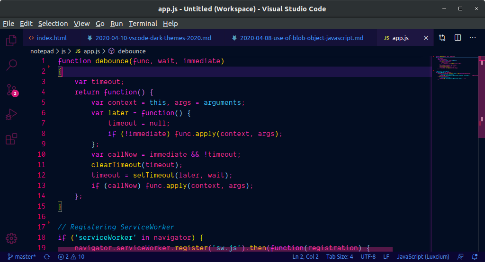

¿Qué es VSC? - Concepto
Visual Studio Code es un editor de texto plano desarrollado por Microsoft totalmente gratuito y de código abierto para ofrecer a los usuarios una herramienta de programación avanzada como alternativa al Bloc de Notas.
Este editor está escrito totalmente en Electron, un framework utilizado para unir Chromium y Node.js en forma de aplicación de escritorio. No se caracteriza precisamente por un bajo consumo de memoria (ya que tiene que cargar todo el core de Chrome), pero es muy sencillo de programar, muy potente y flexible. Este editor utiliza el mismo componente editor que Visual Studio Team Services (Monaco) en lugar del clásico Atom.
Ver másCaracterísticas
Los diferentes lenguajes de Visual Studio ofrecen distintos conjuntos de características y, en algunos casos, estas se comportan de forma diferente en función del lenguaje. Muchas de estas diferencias se especifican en las descripciones de las características
- Colores de la sintaxis
- Marcas de errores y advertencias
- Coincidencia de llaves
- Números de línea
- Seguimiento de cambios
Algunos elementos de la sintaxis de los archivos de código y marcado están coloreados de forma distinta para distinguirlos. Por ejemplo, las palabras clave (como using en C# y Imports en Visual Basic) son de un color, pero los tipos (como Console y Uri) son de otro.
Al agregar código y compilar su solución, puede que vea (a) que aparecen subrayados ondulados de diferentes colores o (b) bombillas en el código. Los subrayados ondulados rojos indican errores de sintaxis, los subrayados ondulados azules indican errores del compilador, los subrayados ondulados verdes indican advertencias y los subrayados ondulados púrpura, otros tipos de errores.
Cuando el punto de inserción se coloca en una llave de apertura en un archivo de código, tanto esta como la llave de cierre se resaltan. Esta característica le permite saber inmediatamente si faltan llaves o si estas están mal colocadas.
Se pueden mostrar números de línea en el margen izquierdo de la ventana de código.
El color del margen izquierdo le permite realizar un seguimiento de los cambios realizados en un archivo. Los cambios que se hayan realizado pero no se hayan guardado desde que se abrió el archivo se indican mediante una barra amarilla en el margen izquierdo
Proceso de instalación
- Paso 1: Ve a la página de Microsoft Visual Studio Code en Academic Software y haz clic en el botón 'Descargar Visual Studio Code' para descargar el archivo de instalación.
- Paso 2: Abre el archivo de instalación .exe en tu carpeta de descargas para iniciar la instalación.
- Paso 3: Lee y acepta el acuerdo de licencia. Haz clic en Next para continuar.
- Paso 4: Puedes cambiar la ubicación de la carpeta de instalación o mantener la configuración predeterminada. Haz clic en Next para continuar.
- Paso 5: Haz clic en Install para iniciar la instalación.
- Paso 8: El programa está instalado y listo para usar. Haz clic en Finish para finalizar la instalación y lanzar el programa.


Ver más